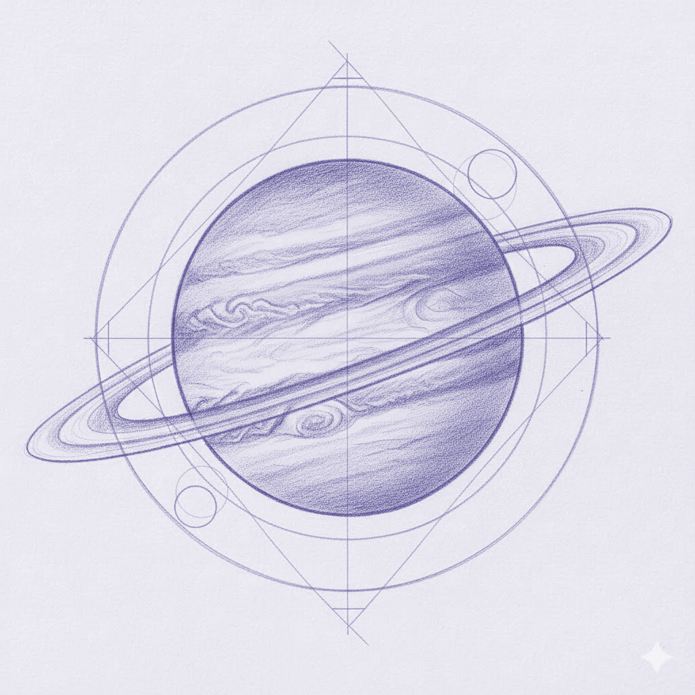
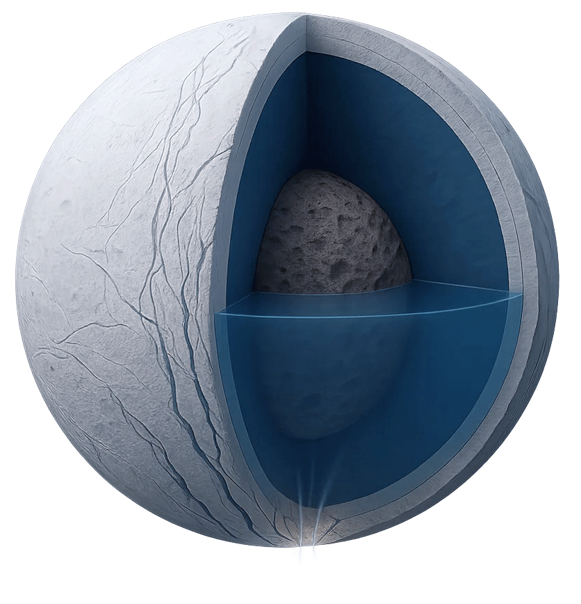

Carregant...
Carregant...
Carregant...

Imatge generada amb Gemini
Context
Carregant...
Carregant contingut...
Continguts principals
Carregant...
Carregant...
Carregant contingut...
Explora
Model interactiu d'Enceladus
Explora les capes d'Enceladus, una de les llunes més prometedores per a la recerca de vida. Passa el cursor sobre els punts blaus per descobrir les característiques de cada capa.

Imatge generada amb Sora
Simulació amb Sora de l'expulsió de partícules d'Enceladus